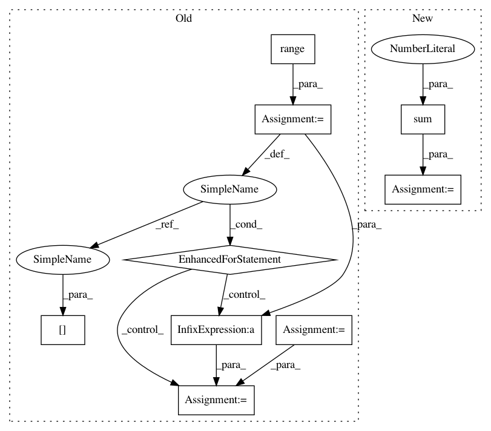

19fbae4ea6092bfc69e4f828febbd15f72365311,cesium/features/cadence_features.py,,delta_t_hist,#,22
Before Change
def delta_t_hist(t, nbins=50):
Build histogram of all possible delta_t"s without storing every value
hist = np.zeros(nbins, dtype="int")
bins = np.linspace(0, max(t) - min(t), nbins + 1)
for i in range(len(t)):
hist += np.histogram(t[i] - t[:i], bins=bins)[0]
hist += np.histogram(t[i + 1:] - t[i], bins=bins)[0]
return hist / 2 // Double-counts since we loop over every pair twice
def normalize_hist(hist, total_time):
After Change
f, x = np.histogram(t, bins=conv_oversample * nbins)
g = np.convolve(f, f[::-1])[len(f) - 1:] // Discard negative domain
g[0] -= len(t) // First bin is double-counted because of i=j terms
hist = g.reshape((-1, conv_oversample)).sum(axis=1) // Combine bins
return hist
In pattern: SUPERPATTERN
Frequency: 3
Non-data size: 9
Instances
Project Name: cesium-ml/cesium
Commit Name: 19fbae4ea6092bfc69e4f828febbd15f72365311
Time: 2016-11-10
Author: brettnaul@gmail.com
File Name: cesium/features/cadence_features.py
Class Name:
Method Name: delta_t_hist
Project Name: cesium-ml/cesium
Commit Name: 19fbae4ea6092bfc69e4f828febbd15f72365311
Time: 2016-11-10
Author: brettnaul@gmail.com
File Name: cesium/features/cadence_features.py
Class Name:
Method Name: delta_t_hist
Project Name: AIRLab-POLIMI/mushroom
Commit Name: e5882409cc9c50d6e67d7220b28b77da592281fc
Time: 2020-06-30
Author: boris.ilpossente@hotmail.it
File Name: mushroom_rl/approximators/parametric/cmac.py
Class Name: CMAC
Method Name: fit
Project Name: scikit-learn-contrib/DESlib
Commit Name: 4abda80dd12518e6bfdc44d067566a3e6947e906
Time: 2018-03-28
Author: rafaelmenelau@gmail.com
File Name: deslib/dcs/a_priori.py
Class Name: APriori
Method Name: estimate_competence